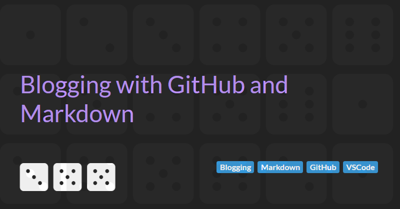

Blogging with GitHub and Markdown
An introduction to getting started using GitHub and Markdown for blogging - blogging about blogging... very meta.
In this article I will outline the advantages of using GitHub and Markdown over more traditional blogging platforms for bloggers coming from a software development background.
But before getting into the details let me explain the purpose of my blog and why you should write your own.
Why should you write a blog?
At least initially, the act of writing is more important that publishing.
There are plenty of jobs where the required knowledge base is fairly static, but Software Engineering is not one of them. Technology is always evolving, and developers need to evolve too if they want to be the best at their craft. In many ways, learning is as much a part of the job of being a developer as writing code.
For me, I try to use my blog as a way of documenting the things that I spend time learning. It reinforces the learning process and provide me with notes and links to any technology, tool, methodology, practice, or language that I have written about in the past.
Why use GitHub?
GitHub has a number of advantages over traditional blogging platforms for those from a software development background:
- Content is version controlled so I can view the history of changes to an article.
- You can allow others to contribute to your blog or create a team blog and control content publishing via the pull request process.
- Major changes can be staged in branches and merged/released as a whole.
- Markdown in natively supported so you can navigate your blog directly via GitHub without having to publish.
Why use Markdown?
Sure I could use HTML or Razor, but Markdown has a lower formatting overhead and, most importantly, provides separation of concerns - the content of my blog is kept separate from any presentation and styling concerns allowing me to update the style independently of content changes.
Using VSCode to author Markdown content
As a developer, you are already probably already using Visual Studio Code. And it natively supports markdown so there is no reason not to use it to author content for your blog.
Top tip: install the Spell Checking for Visual Studio Code extension either manually by searching for Code Spell Checker in the VSCode extension panel (Ctrl+Shift+X), visiting the VSCode marketplace, or executing the following the command line script:
> code --install-extension streetsidesoftware.code-spell-checkerNext Steps
So, you have started your blog and you have written a number of articles. The next step is to generate a static website from you Markdown blog articles.